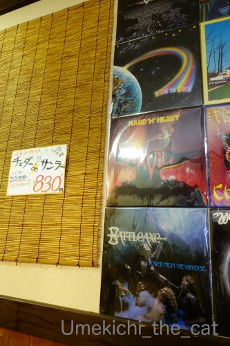

春のカツオ祭り [梅吉]
おっきなお口を開けているのは「梅吉 春のカツオ祭り」だからー！！

猫は幼い頃に食べさせなかったものは大人になってからも食べない
と聞きますが・・・
梅吉は２歳も過ぎた頃に初めて見せて食べさせた「カツオのたたき」が好きで、好きで。
うちは猫缶もちゅ〜るも食べさせたことはなかったのでカツオの味は知らなかったはず。
これはもう、本能？

夢中です( ´艸｀)

そして、美味しいお顔は〜

悪い顔w

悪い顔はバッチリ決まりましたが猫ドリルはダメでした〜＞＜
残念！！

美味しいものを食べて満足してねむる猫。
肉球をしまい忘れてますよ (≧▽≦)
＊＊＊＊＊＊＊＊＊＊＊＊＊＊＊＊＊＊＊＊＊＊＊＊＊＊＊＊＊＊＊＊＊＊＊＊＊
先週３連休中のこと。
てくてく歩いて坦々麺を食べに行った。
開店と同時に店に入り換気の良い入り口横の席をキープ。

白ごま坦々麺（２辛増し）

黒ごま坦々麺（２辛増し）
濃厚でドロドロのスープが美味しい。私は黒ごまのファンになってしまった。
で、常連さんのオーダーにつられて「雑炊ご飯」を頼んでおっとと半分にしてドロドロスープに投入！
炭水化物って素敵♪

【あびこまるたん】
店内はヘヴィメタル一色。
BGMもメタルなら大将とおかみさんの着ているTシャツもメタルバンドのものだったw
音楽はジャンルにとらわれず色々聞くのですがヘヴィメタルは足の踏み入れたことのない世界。
それでもAC/DCとかブラックサバスのレコードジャケットには反応してしまったです(*>艸<)
次回はサンラータン坦々麺に挑戦したい！！
厄除けの観音様にもお参りしてきました。疫病退散！！
みなさま、今日も一日ご安全に♡

カフェオレ色の梅吉

梅吉 2023年8月10日 永眠


梅吉と出会った譲渡会

犬猫の理由なき殺処分ゼロ
妄想広告
UMEKICHI 光

爆発的に早い！
時々攻撃的！
Thanks to Mr.Boss365
爆発的に早い！
時々攻撃的！
Thanks to Mr.Boss365

猫は生後6ヶ月くらいまでに食性が決まりますが、食べたことのないものを食べないというわけではありませぬ。主食が何になるかの話です。肉や魚・乳製品や卵などはどの猫でも匂いで食べ物だと理解しているようです。好きかどうかはまた別の話ですが⋯。梅吉さんは結構グルメですよね~。美味しいものもらったお顔の可愛いこと。
by zombiekong (2020-03-30 00:19)
カツオのたたき～
私も食べたいです（ﾟ□ﾟ）
by 英ちゃん (2020-03-30 01:13)
我が家の場合は、
どちらかと言うと本猫の好みの違いかも？
小さい頃に与えてなかった物を
めっちゃ喜ぶ子も居れば、そっぽ向く子も居ます。
我が家はカジキが一番人気かな＾＾
by ぽちの輔 (2020-03-30 06:18)
梅吉さん、カツオにまっしぐらです！悪い顔？になるほど好きなんですね。
by ニコニコファイト (2020-03-30 07:08)
梅吉さん、美味しいお顔ですねぇ( ^ω^ )
カツオ祭り、とっても美味しい時間を過ごした後は
ぬくぬくで爆睡ですね＾＾
うちはノエルがカツオが好きじゃないので
猫缶もカツオが入ってないのを選んでます(⌒-⌒; )
by ニッキー (2020-03-30 07:57)
すんごい夢中なお顔♪
美味しそうに食べてくれると
こちらも嬉しくなりますね(#^.^#)
肉球・・・触りたくなりますが
我慢なのですよね？？
by きぃ (2020-03-30 08:13)
梅吉さん、本能でカツオチョイスとは！さすがナニワの漢だねｗ(^^
おいしいお顔は悪いお顔になっちゃうの、何となくわかります。
Naoちゃんも腰ポンポンで気持ちいいお顔は悪い顔っぽくなります。
肉球と舌のしまい忘れは大歓迎♪ウェルカムです。
ヘヴィメタの担々麺屋さんって！攻めてるなｗ
黒ゴマ担々麺美味しそうですにゃ。担々麺食べたいｗ
私も昨日ランチに歩いていつも行列しているラーメン屋さんに行きました。
そこはつけ麺と普通のラーメンがあるのですが、出汁が魚系でドロッとしてました。カウンターだけの店で、隣に座った年の差カップルの会話に耳ダンボでした（女性が10歳くらい年上じゃないかい？なカップルでした）
行列はしていましたが個人的にはリピなしです。
by marimo (2020-03-30 08:39)
梅吉さん、夢中過ぎて、目が寄ってる！！
実家のミイちゃんは、ホタテ大好きで、しかも似たもので違うとしっかりわかって食べないというグルメっぷり。いつから好きだったのかはわからないけど。
そして、意外と魚系は好きじゃないみたい。カツオは知らないけど、マグロとかはイマイチ興味がないんだって。
担々麺いいなぁ。メンタルダウン中はお店に入る元気がないのです～。
by ChatBleu (2020-03-30 09:24)
こんにちは(^-^*)/
まあ、無我夢中とはこんなお顔を言うんでしょう？
by Take-Zee (2020-03-30 09:27)
カツオ命の梅吉さん、もう夢中ですね(#^^#)
ウチのはほんとキャットフード以外には興味示さず。
横取りされる心配がなくていいのですが、もちかして味覚音痴なのか？！と心配になったり^^;
ヘビメタ担々麺、ものすごく気になります♪
学生時代はとにかく洋楽に夢中でヘビメタも大好き。ジューダス・プリースト、アイアン・メイデン、デフ・レパード、マイケル・シェンカー等々、ライブも多数参戦。
周囲は黒ずくめで鋲がいっぱいの服の人ばかり。普段着の私は逆に奇異の目で見られてました^^;
コロナが落ち着いたらこのお店行ってみたいです^^
by ゆきち (2020-03-30 12:18)
こんにちは。
梅吉君、春のカツオ祭りを堪能してますね。
お顔な傾き具合が素晴らしいです。
「カツオのたたき」を食べさせた事がないですが、機会あれば挑戦してみます。
ご飯のお供に「梅カツオ」はベストな組み合わせ？
おにぎりの具にと大活躍します？意味不明でスミマセン。
「猫ドリル」惜しい・・・次回に期待です。
坦々麺に「雑炊ご飯」の注文は危険ですが、美味しいですね。
流れとしては、ヘヴィメタルでカロリーを消費です。
ヘヴィメタ？KISSもヘビメタビジュアルですが・・・
本物を体験した経験ないかな！？(=^･ｪ･^=)
by Boss365 (2020-03-30 12:41)
本能あるとおもいます！
だってね、うちの子たちも10歳になるまで焼き海苔の味は知らないはずなのに！
キッチンで焼き海苔ぱりぱりちぎって料理にいれたときに
たぶんこぼれたとおもうのよね。そしてそれを食べたみたいなのよね。
それからもうダメです。焼き海苔の音を聞くと飛んできて
くれくれ攻撃^^;
だめー！あげないーーーー！
担担麺美味しそうだよーーー
生協の例の担担麺食べました！花椒最高♪
by リュカ (2020-03-30 14:11)
iPadからなのでページ探すのに時間がかかった(笑)
by ma2ma2 (2020-03-30 15:23)
梅吉さんの嬉しそうなこと！
夢中なお顔、癒されます～^^
幼いうちに食べなかったもの…？ そんなこと、あるかなー…
人間をあきらめさせる言葉のような気も。
にゃんこはグルメになる一方、って気がします。子猫の頃は食べなかったビーフの猫缶とか、海老とか、ホワイトソースものとか…後で超好きになった子が。
海のにおいがするものとか、惹かれやすいんじゃないでしょうか。
by sana (2020-03-30 17:00)
春のカツオ祭、私も参加したいほど。 「カツオのたたき」大好きです＾＾。
でも、もう何年も食べてなくて・・・。
しまい忘れの肉球を見てるだけで半日はあっという間に過ぎていきそう♪
ゴマたっぷりの坦々麺もなんて美味しそうな。 まみれたいです。
by Inatimy (2020-03-30 18:51)
梅吉さん、カツオを目の前に嬉しそうですね♪
手にすがりつく肉球の感触を味わいたい！
ヘビメタの流れるラーメン屋さんの坦々麺、
なんかメッチャ辛そう。^^;
by yes_hama (2020-03-30 21:39)
うちの猫ズは誰も生もの食べないんですよね。味付けなしで
焼いた肉は大喜びしますが。担担麺は黒胡麻担担麺が好きです。
歯がお歯黒になるのが難点だけどうまし！！
わたしもヘビメタは苦手だけどハードロック系は好きでAC/DC
は10年前ぐらいに来日した時にライヴに行きました。お兄ちゃん
が亡くなったのでもうあのメンバーでは見られなくて残念。
by mio (2020-03-30 21:39)
一番最初のお写真はまさに獲物を捕獲する目！
指ごとガブリエルしてないか心配です(笑)
もう初ガツオとは梅吉さんとってもグルメ♪
手もホールドして逃がさないニャーですね。
担々麵＆ご飯の炭水化物コンビで新型コロナウィルスも入る余地なし(^^♪
by yamatonosuke (2020-03-31 01:25)
日本三大祭りとは、
京都の祇園祭り、大阪の天神祭り、
そしてヤマザキ春のパン祭り！
梅吉春のカツオ祭りは、惜しくも4番目でしょうか。
おっしゃるように、これはまさに本能！
たっぷり食べて寝る！ステキです（≧∇≦）
by よーちゃん (2020-03-31 07:22)
うちの猫は煮干しが大好きでした。
思い出しますが、やはり夢中になると悪い顔になりますね(^_^;)
担々麺、超大好物です。
今の騒動がおさまったら食べに行きたいですが、しばらくは自宅で食べるしかないですね・・・。
by kou (2020-03-31 17:01)
カツオのたたき一度あげてみたいのですが一度あげるとおちおち食卓に並べられなくなるのでは・・・と思うとなかなか踏み切れずにいます(;^ω^)だってゆっくり食べたいもの～
by palpal (2020-03-31 22:01)
おててを両側から添えて食べる梅吉さんの可愛いこと♡
by nachic (2020-03-31 23:03)
春のカツオ祭りーーw
まっとうな猫のお祭りですね( *´艸｀*)
うちは春のイチゴ祭りです(((*≧艸≦)ﾌﾟﾌﾟｯ
もうイチゴには目がなくてｗｗ 猫か？って思います。
ちぃさん(おっとさん？)のおててを挟み込むモフモフな
お手手に萌えちゃいます;｡+ﾟ+｡ｷｭ━(*´U｀*)━ﾝ｡+.｡ﾟ:;｡+
坦々麺＝リュカさんとインプットされていますが
私も坦々麺大好きです❤︎おいしそうですねーー♪
by カトリーヌ (2020-04-01 21:53)